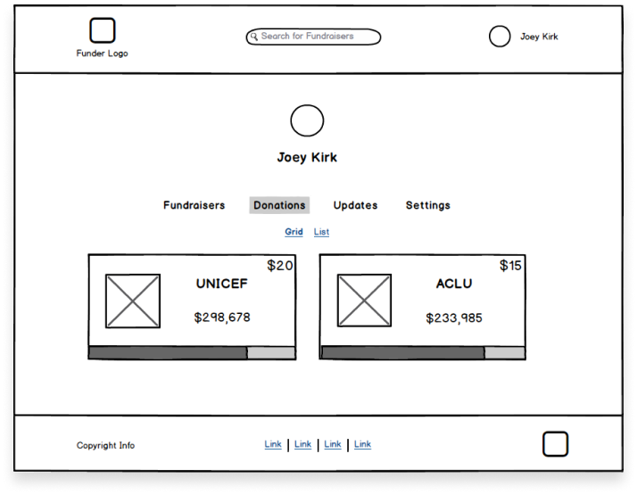

Funder
Purpose
A modern, simple, and design-focused crowdfunding service.
Roles
UX & Visual Design
Brand & Identity
Summary
The marketplace has a few large crowdfunding services that are quite popular. However, the vast majority of services give a poor user experience, and split up user causes. One large service mainly caters to products and projects, while another service focuses on social justice, medical expenses, and civic funds. Funder attempts to create a simple, and beautiful website that has no such limits.

The Problem
Looking into the crowdfunding and donation space showed me that there was still quite a bit left lacking in the market.
In my research, the majority of people donated only once a year or less. Even then most people did not yet go to one service to handle all of these, but instead went to multiple websites to do this.
However, most people like the simplicity of donating online and said that they were interested in a service covering all of those needs.
The Solution
The goal for a service like Funder is the simplicity and intentional design of a modern donation and crowdfunding service. With the help of user testing and research I was able to focus on these essentials.
In my testing users found the simplicity of Funder much more enjoyable than competitors sites.
Would you like to try a desktop prototype?
The Process
I created Funder from its inception to final designs. A competitive analysis showed weaknesses in competitors offerings with segmented approaches to crowdfunding and donations. User surveys gave greater insight into how users currently donate and participate in crowdfunding.
User personas were essential to understanding who would be using a service like Funder and what they needed in that service.
User stories gave me the ability to see the complete list of the user’s needs and wants. Through user flows I was able to refine these actions to their simplest forms.
Design
After user flows had been refined, I began on the layouts of the service one section at a time. With wireframe testing I was able to iterate and focus on successful designs for displaying information.
Early Concept for a User Viewing Their Own Fundraisers Dashboard
There was extensive testing done on layouts for viewing a user’s own fundraisers and donations. Multiple views were tested, from a horizontal menu to left-side menus.
Early Concept for a User Viewing a Grid of Their Own Donations

Ultimately it became clear that a traditional left-side menu was the most successful design to display the information needed, and users responded positively to it’s layout.
Final Design of Users Own Donations Page
Color Palette
Funder’s logo, and even name, were designed to be as simple as possible. Another goal was for the name itself to state it’s purpose, and be easily remembered.
A pleasing shade of green was chosen due to the color green not only being tied to money, but mainly for it also being a color of compassion. Additional colors were added for certain actions, warnings, and accents.
Typography
When it came to typefaces, early on it became clear that Poppins was a great fit for the role. It’s a sophisticated, modern, yet slightly casual font family was exactly the role we wanted. Funder was meant to be a service where serious help could be given, but also where enjoyment could be had such as funding projects or prototypes. For some small uses, Raleway was again used as it’s proven to be a reliable typeface for readability and sublety.
Conclusion
After months of laborous work, the Funder prototype was completed. It’s resulted in a simple, modern, and beautiful crowdfunding service with no limitations. In creating Funder, much was gained in understanding users behaviors and in my skills as a designer/researcher. Constant iteration from user testing resulted in a deliberate and intentional design. Based on my results, the prototype has received positive feedback for it’s simplified nature, and modern appeal.
If you didn't get a chance earlier, would you like to try a desktop prototype?